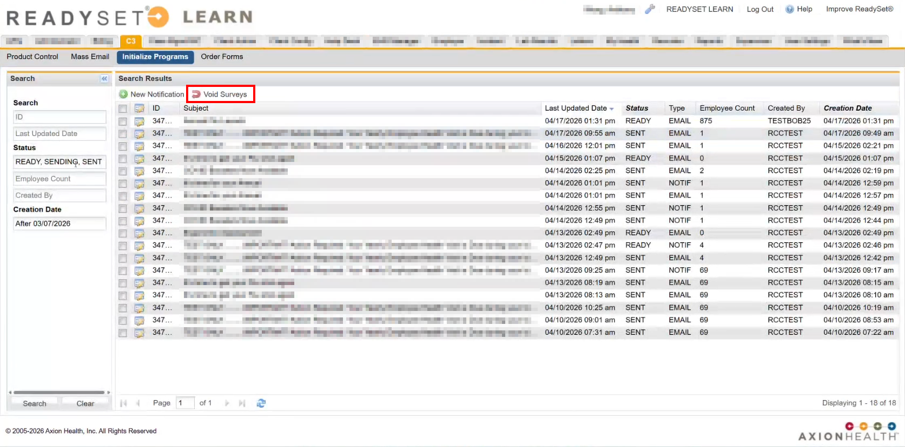
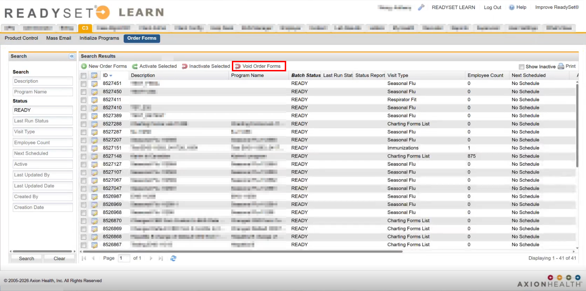

After a program is initialized or order forms are are sent, you can choose to void them. Using the void option allows you to remove order forms and surveys that might have been sent in error or need additional configuration.
For Initialized Programs, notifications can be voided from the C3 > Initialize Programs view. When voided, the survey is removed from the participant record and the program will have the status of Cancelled. If a survey has already been completed and submitted, it is also removed from the participant record. Only surveys that have the status of Sent can be voided.
For Order Forms, open orders can be voided from the C3 > Order Forms view, including any surveys included in the order. When voided, charting forms will be voided, any surveys included are removed, and the order form status is changed to Cancelled. If an order form has already been completed and submitted, it is not deleted, only voided, and remains in the participant record.
Only one program or order form can be voided at a time.
To void initialized programs, do the following:

To void order forms, do the following:
